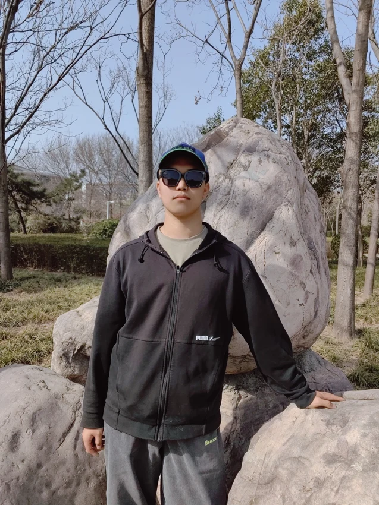
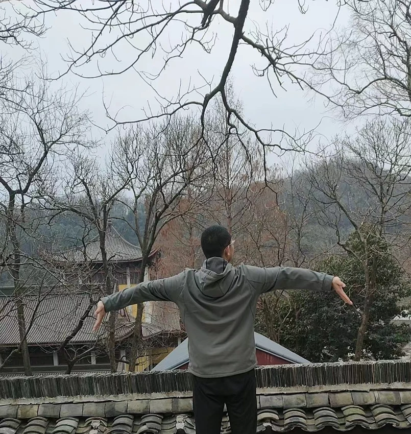
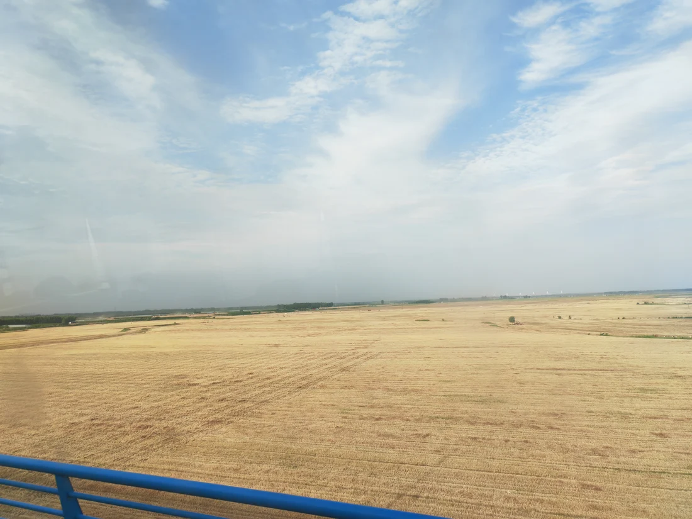
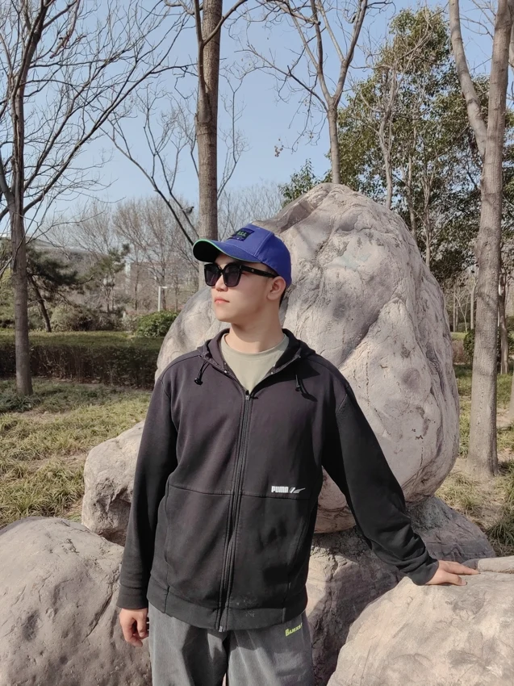
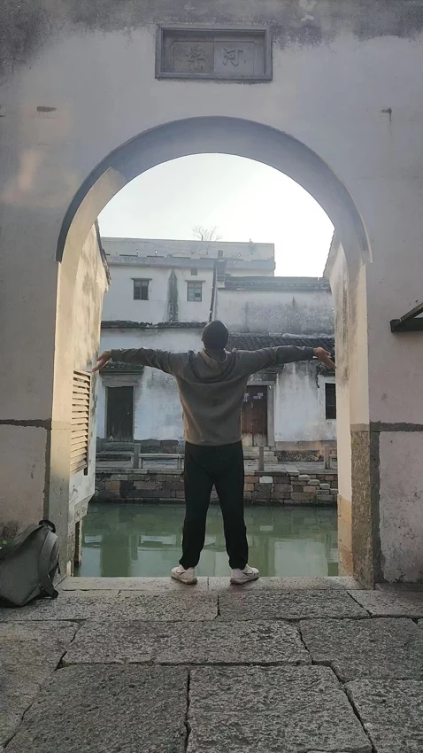
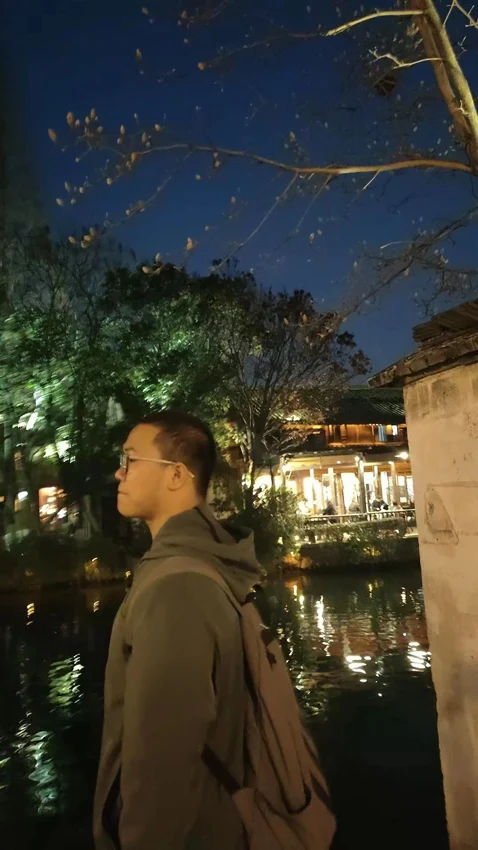

BEYOND THE SCREEN
Beyond the screen
A life of small discoveries.
A love for freedom, sports, books, chess, good food, travel and music. There is always something new to discover.
“Love is worth more than anything.”



More moments



LEARNING OUT LOUD
Notes from the process.
Technical writing, practical lessons, and ideas in progress.